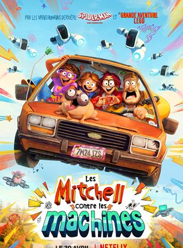

Voir la Bande-annonce
Les Mitchell contre les machines
1h 54min / Animation, Comédie, Famille
Abbi Jacobson,
Maya Rudolph,
Danny McBride
De Michael Rianda et de
Jeff Rowe
Katie Michell, jeune fille passionnée à la créativité débordante, est acceptée dans l'université de ses rêves. Alors qu’elle avait prévu de prendre l’avion pour s’installer à l’université, son père Rick, décide que toute la famille devrait l’accompagner en voiture pour faire un road- trip et profiter d’un moment tous ensemble.
Voir la Bande-annonce